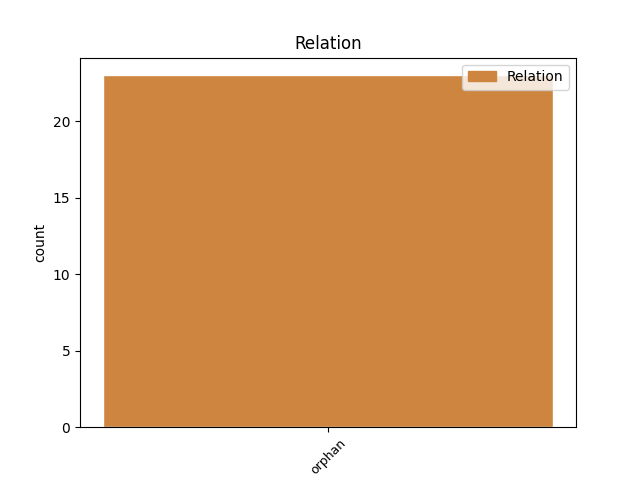
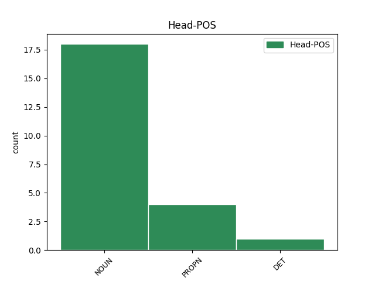
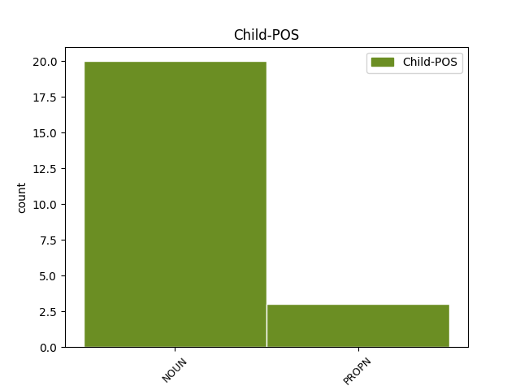

Distribution of features within this leaf



Agreement Rules sorted by frequency.
- When the dependent token is the orphan(orphan) of the head token, and the head token is NOUN and the dependent token is NOUN.
1 Od _ _ _ _ 0 _ _ _
2 1973. _ _ _ _ 0 _ _ _
3 osnovane _ _ _ _ 0 _ _ _
4 su _ _ _ _ 0 _ _ _
5 32 _ _ _ _ 0 _ _ _
6 Kikine _ _ _ _ 0 _ _ _
7 trgovine _ _ _ _ 0 _ _ _
8 za _ _ _ _ 0 _ _ _
9 uređenje _ _ _ _ 0 _ _ _
10 doma _ _ _ _ 0 _ _ _
11 na _ _ _ _ 0 _ _ _
12 austrijskom _ _ _ _ 0 _ _ _
13 tržištu _ _ _ _ 0 _ _ _
14 kao _ _ _ _ 0 _ _ _
15 i _ _ _ _ 0 _ _ _
16 23 _ _ _ _ 0 _ _ _
17 prodajna _ _ _ _ 0 _ _ _
18 prostora prostor NOUN Ncmsg Case=Gen|Gender=Masc|Number=Sing 21 orphan _ orig_deprel=nsubj:pass
19 u _ _ _ _ 0 _ _ _
20 šest _ _ _ _ 0 _ _ _
21 zemalja zemlja NOUN Ncfpg Case=Gen|Gender=Fem|Number=Plur 0 _ _ _
22 jugoistočne _ _ _ _ 0 _ _ _
23 Europe _ _ _ _ 0 _ _ _
24 . _ _ _ _ 0 _ _ _
1 Češka _ _ _ _ 0 _ _ _
2 ima _ _ _ _ 0 _ _ _
3 preko _ _ _ _ 0 _ _ _
4 12.000 _ _ _ _ 0 _ _ _
5 , _ _ _ _ 0 _ _ _
6 Mađarska Mađarska PROPN Npfsn Case=Nom|Gender=Fem|Number=Sing 11 orphan _ orig_deprel=nsubj
7 preko _ _ _ _ 0 _ _ _
8 10.000 _ _ _ _ 0 _ _ _
9 , _ _ _ _ 0 _ _ _
10 a _ _ _ _ 0 _ _ _
11 Hrvatska Hrvatska PROPN Npfsn Case=Nom|Gender=Fem|Number=Sing 0 _ _ _
12 nešto _ _ _ _ 0 _ _ _
13 iznad _ _ _ _ 0 _ _ _
14 8000 _ _ _ _ 0 _ _ _
15 eura _ _ _ _ 0 _ _ _
16 . _ _ _ _ 0 _ _ _
1 Lošije _ _ _ _ 0 _ _ _
2 od _ _ _ _ 0 _ _ _
3 Kaptola _ _ _ _ 0 _ _ _
4 u _ _ _ _ 0 _ _ _
5 raspodjeli _ _ _ _ 0 _ _ _
6 proračunskog _ _ _ _ 0 _ _ _
7 novca _ _ _ _ 0 _ _ _
8 2008. _ _ _ _ 0 _ _ _
9 godine _ _ _ _ 0 _ _ _
10 prošli _ _ _ _ 0 _ _ _
11 su _ _ _ _ 0 _ _ _
12 , _ _ _ _ 0 _ _ _
13 primjerice _ _ _ _ 0 _ _ _
14 , _ _ _ _ 0 _ _ _
15 i _ _ _ _ 0 _ _ _
16 Vlada _ _ _ _ 0 _ _ _
17 koja _ _ _ _ 0 _ _ _
18 je _ _ _ _ 0 _ _ _
19 na _ _ _ _ 0 _ _ _
20 raspolaganju _ _ _ _ 0 _ _ _
21 imala _ _ _ _ 0 _ _ _
22 289 _ _ _ _ 0 _ _ _
23 milijuna _ _ _ _ 0 _ _ _
24 kuna _ _ _ _ 0 _ _ _
25 , _ _ _ _ 0 _ _ _
26 Sabor Sabor PROPN Npmsn Case=Nom|Gender=Masc|Number=Sing 30 orphan _ orig_deprel=nsubj
27 177 _ _ _ _ 0 _ _ _
28 , _ _ _ _ 0 _ _ _
29 a _ _ _ _ 0 _ _ _
30 Ured ured NOUN Ncmsn Case=Nom|Gender=Masc|Number=Sing 0 _ _ _
31 predsjednika _ _ _ _ 0 _ _ _
32 55 _ _ _ _ 0 _ _ _
33 milijuna _ _ _ _ 0 _ _ _
34 kuna _ _ _ _ 0 _ _ _
35 . _ _ _ _ 0 _ _ _
1 Iako _ _ _ _ 0 _ _ _
2 je _ _ _ _ 0 _ _ _
3 Dalmatinca _ _ _ _ 0 _ _ _
4 nadasve _ _ _ _ 0 _ _ _
5 teško _ _ _ _ 0 _ _ _
6 pobijediti _ _ _ _ 0 _ _ _
7 u _ _ _ _ 0 _ _ _
8 briškuli _ _ _ _ 0 _ _ _
9 , _ _ _ _ 0 _ _ _
10 Zagorca zagorac NOUN Ncmsay Animacy=Anim|Case=Acc|Gender=Masc|Number=Sing 15 orphan _ orig_deprel=obj
11 u _ _ _ _ 0 _ _ _
12 beli _ _ _ _ 0 _ _ _
13 , _ _ _ _ 0 _ _ _
14 a _ _ _ _ 0 _ _ _
15 Baranjca Baranjac PROPN Npmsay Animacy=Anim|Case=Acc|Gender=Masc|Number=Sing 0 _ _ _
16 i _ _ _ _ 0 _ _ _
17 Slavonca _ _ _ _ 0 _ _ _
18 u _ _ _ _ 0 _ _ _
19 spremanju _ _ _ _ 0 _ _ _
20 fišpaprikaša _ _ _ _ 0 _ _ _
21 , _ _ _ _ 0 _ _ _
22 treće _ _ _ _ 0 _ _ _
23 mjesto _ _ _ _ 0 _ _ _
24 ipak _ _ _ _ 0 _ _ _
25 je _ _ _ _ 0 _ _ _
26 osvojila _ _ _ _ 0 _ _ _
27 domaća _ _ _ _ 0 _ _ _
28 ekipa _ _ _ _ 0 _ _ _
29 znakovita _ _ _ _ 0 _ _ _
30 imena _ _ _ _ 0 _ _ _
31 " _ _ _ _ 0 _ _ _
32 Bilo _ _ _ _ 0 _ _ _
33 mi _ _ _ _ 0 _ _ _
34 je _ _ _ _ 0 _ _ _
35 vrime _ _ _ _ 0 _ _ _
36 " _ _ _ _ 0 _ _ _
37 za _ _ _ _ 0 _ _ _
38 koju _ _ _ _ 0 _ _ _
39 su _ _ _ _ 0 _ _ _
40 kuhali _ _ _ _ 0 _ _ _
41 Stipe _ _ _ _ 0 _ _ _
42 Jerković _ _ _ _ 0 _ _ _
43 i _ _ _ _ 0 _ _ _
44 Mate _ _ _ _ 0 _ _ _
45 Katuša _ _ _ _ 0 _ _ _
Disagree Examples:
1 Poljski _ _ _ _ 0 _ _ _
2 skladatelj _ _ _ _ 0 _ _ _
3 Zbigniew _ _ _ _ 0 _ _ _
4 Preisner _ _ _ _ 0 _ _ _
5 , _ _ _ _ 0 _ _ _
6 poznat _ _ _ _ 0 _ _ _
7 po _ _ _ _ 0 _ _ _
8 radu _ _ _ _ 0 _ _ _
9 s _ _ _ _ 0 _ _ _
10 redateljem _ _ _ _ 0 _ _ _
11 Krzysztofom _ _ _ _ 0 _ _ _
12 Kieslowskim _ _ _ _ 0 _ _ _
13 , _ _ _ _ 0 _ _ _
14 zadužen _ _ _ _ 0 _ _ _
15 je _ _ _ _ 0 _ _ _
16 za _ _ _ _ 0 _ _ _
17 glazbu _ _ _ _ 0 _ _ _
18 , _ _ _ _ 0 _ _ _
19 a _ _ _ _ 0 _ _ _
20 Eugene Eugene PROPN Npmsn Case=Nom|Gender=Masc|Number=Sing 34 orphan _ orig_deprel=nsubj:pass
21 Gearty _ _ _ _ 0 _ _ _
22 , _ _ _ _ 0 _ _ _
23 koji _ _ _ _ 0 _ _ _
24 je _ _ _ _ 0 _ _ _
25 sudjelovao _ _ _ _ 0 _ _ _
26 u _ _ _ _ 0 _ _ _
27 snimanju _ _ _ _ 0 _ _ _
28 filma _ _ _ _ 0 _ _ _
29 " _ _ _ _ 0 _ _ _
30 Avijatičar _ _ _ _ 0 _ _ _
31 " _ _ _ _ 0 _ _ _
32 , _ _ _ _ 0 _ _ _
33 za _ _ _ _ 0 _ _ _
34 ton ton NOUN Ncmsan Animacy=Inan|Case=Acc|Gender=Masc|Number=Sing 0 _ _ _
35 . _ _ _ _ 0 _ _ _
1 Dok _ _ _ _ 0 _ _ _
2 CeBIT-om _ _ _ _ 0 _ _ _
3 dominiraju _ _ _ _ 0 _ _ _
4 hard-core _ _ _ _ 0 _ _ _
5 noviteti _ _ _ _ 0 _ _ _
6 iz _ _ _ _ 0 _ _ _
7 svijeta _ _ _ _ 0 _ _ _
8 računalne _ _ _ _ 0 _ _ _
9 tehnologije _ _ _ _ 0 _ _ _
10 , _ _ _ _ 0 _ _ _
11 a _ _ _ _ 0 _ _ _
12 MWC-om MWC NOUN Ncmsi Case=Ins|Gender=Masc|Number=Sing 14 orphan _ orig_deprel=obl
13 telekomunikacijske _ _ _ _ 0 _ _ _
14 premijere premijera NOUN Ncfpn Case=Nom|Gender=Fem|Number=Plur 0 _ _ _
15 , _ _ _ _ 0 _ _ _
16 IFA _ _ _ _ 0 _ _ _
17 je _ _ _ _ 0 _ _ _
18 postala _ _ _ _ 0 _ _ _
19 najvažnije _ _ _ _ 0 _ _ _
20 događanje _ _ _ _ 0 _ _ _
21 za _ _ _ _ 0 _ _ _
22 predstavljanje _ _ _ _ 0 _ _ _
23 tehnologija _ _ _ _ 0 _ _ _
24 i _ _ _ _ 0 _ _ _
25 uređaja _ _ _ _ 0 _ _ _
26 kod _ _ _ _ 0 _ _ _
27 kojih _ _ _ _ 0 _ _ _
28 je _ _ _ _ 0 _ _ _
29 u _ _ _ _ 0 _ _ _
30 fokusu _ _ _ _ 0 _ _ _
31 ekran _ _ _ _ 0 _ _ _
32 . _ _ _ _ 0 _ _ _
1 - _ _ _ _ 0 _ _ _
2 Predloženi _ _ _ _ 0 _ _ _
3 je _ _ _ _ 0 _ _ _
4 proračun _ _ _ _ 0 _ _ _
5 marketinški _ _ _ _ 0 _ _ _
6 spin _ _ _ _ 0 _ _ _
7 : _ _ _ _ 0 _ _ _
8 umirovljenicima _ _ _ _ 0 _ _ _
9 se _ _ _ _ 0 _ _ _
10 neće _ _ _ _ 0 _ _ _
11 smanjivati _ _ _ _ 0 _ _ _
12 mirovine _ _ _ _ 0 _ _ _
13 , _ _ _ _ 0 _ _ _
14 zaposlenima _ _ _ _ 0 _ _ _
15 u _ _ _ _ 0 _ _ _
16 državnoj _ _ _ _ 0 _ _ _
17 upravi _ _ _ _ 0 _ _ _
18 i _ _ _ _ 0 _ _ _
19 javnim _ _ _ _ 0 _ _ _
20 službama _ _ _ _ 0 _ _ _
21 plaće _ _ _ _ 0 _ _ _
22 , _ _ _ _ 0 _ _ _
23 seljacima seljak NOUN Ncmpd Case=Dat|Gender=Masc|Number=Plur 24 orphan _ orig_deprel=iobj
24 poticaji poticaj NOUN Ncmpn Case=Nom|Gender=Masc|Number=Plur 0 _ _ _
25 , _ _ _ _ 0 _ _ _
26 a _ _ _ _ 0 _ _ _
27 svima _ _ _ _ 0 _ _ _
28 zajedno _ _ _ _ 0 _ _ _
29 socijalne _ _ _ _ 0 _ _ _
30 naknade _ _ _ _ 0 _ _ _
31 . _ _ _ _ 0 _ _ _
1 Tako _ _ _ _ 0 _ _ _
2 je _ _ _ _ 0 _ _ _
3 od _ _ _ _ 0 _ _ _
4 Blaga _ _ _ _ 0 _ _ _
5 u _ _ _ _ 0 _ _ _
6 Srebrnom _ _ _ _ 0 _ _ _
7 jezeru _ _ _ _ 0 _ _ _
8 ( _ _ _ _ 0 _ _ _
9 1962. _ _ _ _ 0 _ _ _
10 ) _ _ _ _ 0 _ _ _
11 do _ _ _ _ 0 _ _ _
12 filma _ _ _ _ 0 _ _ _
13 " _ _ _ _ 0 _ _ _
14 Winnetou _ _ _ _ 0 _ _ _
15 i _ _ _ _ 0 _ _ _
16 Shatterhand _ _ _ _ 0 _ _ _
17 u _ _ _ _ 0 _ _ _
18 Dolini _ _ _ _ 0 _ _ _
19 smrt _ _ _ _ 0 _ _ _
20 ( _ _ _ _ 0 _ _ _
21 1968. _ _ _ _ 0 _ _ _
22 ) _ _ _ _ 0 _ _ _
23 lik _ _ _ _ 0 _ _ _
24 velikog _ _ _ _ 0 _ _ _
25 indijanskog _ _ _ _ 0 _ _ _
26 poglavice _ _ _ _ 0 _ _ _
27 utjelovljavao _ _ _ _ 0 _ _ _
28 francuski _ _ _ _ 0 _ _ _
29 plemić _ _ _ _ 0 _ _ _
30 Pierre _ _ _ _ 0 _ _ _
31 Brice _ _ _ _ 0 _ _ _
32 , _ _ _ _ 0 _ _ _
33 a _ _ _ _ 0 _ _ _
34 njegova _ _ _ _ 0 _ _ _
35 prijatelja prijatelj NOUN Ncmsg Case=Gen|Gender=Masc|Number=Sing 36 orphan _ orig_deprel=nmod
36 Lex Lex PROPN Npmsn Case=Nom|Gender=Masc|Number=Sing 0 _ _ _
37 Barker _ _ _ _ 0 _ _ _
38 . _ _ _ _ 0 _ _ _
1 Svaki _ _ _ _ 0 _ _ _
2 puta _ _ _ _ 0 _ _ _
3 mijenjali _ _ _ _ 0 _ _ _
4 smo _ _ _ _ 0 _ _ _
5 ulje _ _ _ _ 0 _ _ _
6 , _ _ _ _ 0 _ _ _
7 filtar _ _ _ _ 0 _ _ _
8 ulja _ _ _ _ 0 _ _ _
9 i _ _ _ _ 0 _ _ _
10 filtar _ _ _ _ 0 _ _ _
11 zraka _ _ _ _ 0 _ _ _
12 ( _ _ _ _ 0 _ _ _
13 potonji _ _ _ _ 0 _ _ _
14 samo _ _ _ _ 0 _ _ _
15 ne _ _ _ _ 0 _ _ _
16 na _ _ _ _ 0 _ _ _
17 prvom _ _ _ _ 0 _ _ _
18 servisu _ _ _ _ 0 _ _ _
19 ) _ _ _ _ 0 _ _ _
20 , _ _ _ _ 0 _ _ _
21 a _ _ _ _ 0 _ _ _
22 svakih _ _ _ _ 0 _ _ _
23 30.000 _ _ _ _ 0 _ _ _
24 kilometara kilometar NOUN Ncmpg Case=Gen|Gender=Masc|Number=Plur 26 orphan _ orig_deprel=advmod
25 i _ _ _ _ 0 _ _ _
26 svjećice svjećica NOUN Ncfpa Case=Acc|Gender=Fem|Number=Plur 0 _ _ _
27 . _ _ _ _ 0 _ _ _